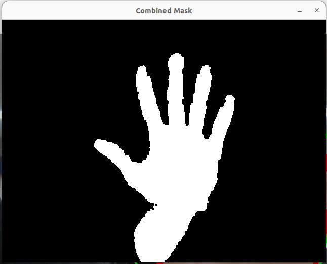
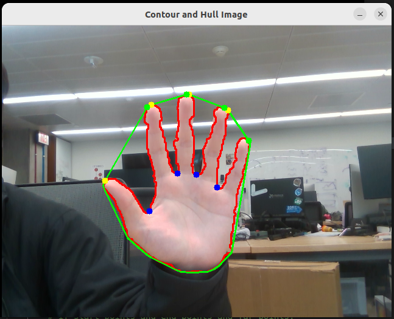
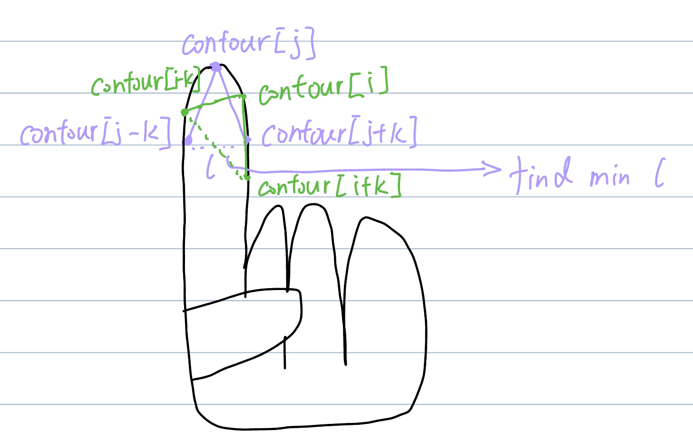
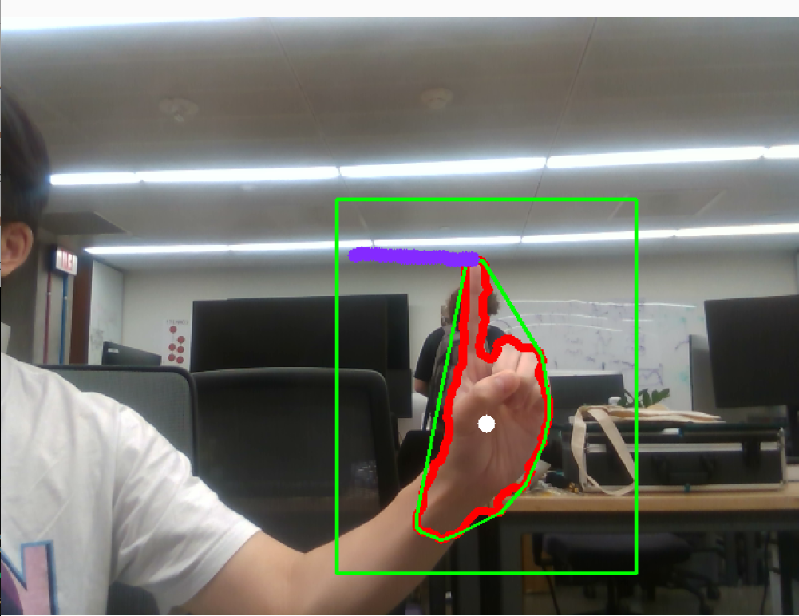
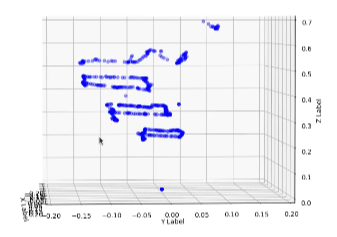

The purpose of the project is to track the location of the fingertip in real time and draw the path of fingertip movement in 3D.
The first step is background subtraction and skin color extraction. I decided to use YCrCb color ranges since
many studies show that YCrCb color ranges are best for representing the skin color region. I first split it into
3 channels (Y, Cr, Cb) and threshold each channel independently. For each channel, I use morphology operators to
remove noise and later combine them using
cv2.bitwise_and(mask_Y, cv2.bitwise_and(mask_Cr, mask_Cb)). Lastly, threshold binarization is
applied to smooth the image.
The resulting image after Image Segmentation:
Computing a convex hull for an object and determining its convexity is a good way to find the shape of a human hand, as hand shapes are well characterized by such defects. The convexity defects obtained from OpenCV include information about start points, end points, depth points, and the distance between the farthest contour point and the hull.
However, this information includes noise. To determine precise finger locations, it must meet the following criteria:
To find the angle, I implemented the law of cosines:
With all the information from the previous steps, I can find all finger locations when the user opens their palm. Next, I want to perform gesture recognition based on simple and heuristic assumptions. Currently, I only focus on two gestures:
Detecting the first gesture is relatively easy as mentioned before. However, the information from the previous steps is not enough to find the fingertip when the user raises only one finger. The method of detecting one finger can be explained by the following picture:
K is a constant value. For each potential finger location, I find a pair of points (contour[i-k] and
contour[i+k]) and calculate the location between the pair of points. This distance, defined as l,
is used to determine the precise finger location, with the potential location having the smallest l being
considered the fingertip.
Drawing starts only when the user raises one finger. This allows the user to open their palm to stop drawing and reposition where they want to draw.
Additionally, since I am using the Realsense D435i depth camera, I can record all 3D locations of the path:
